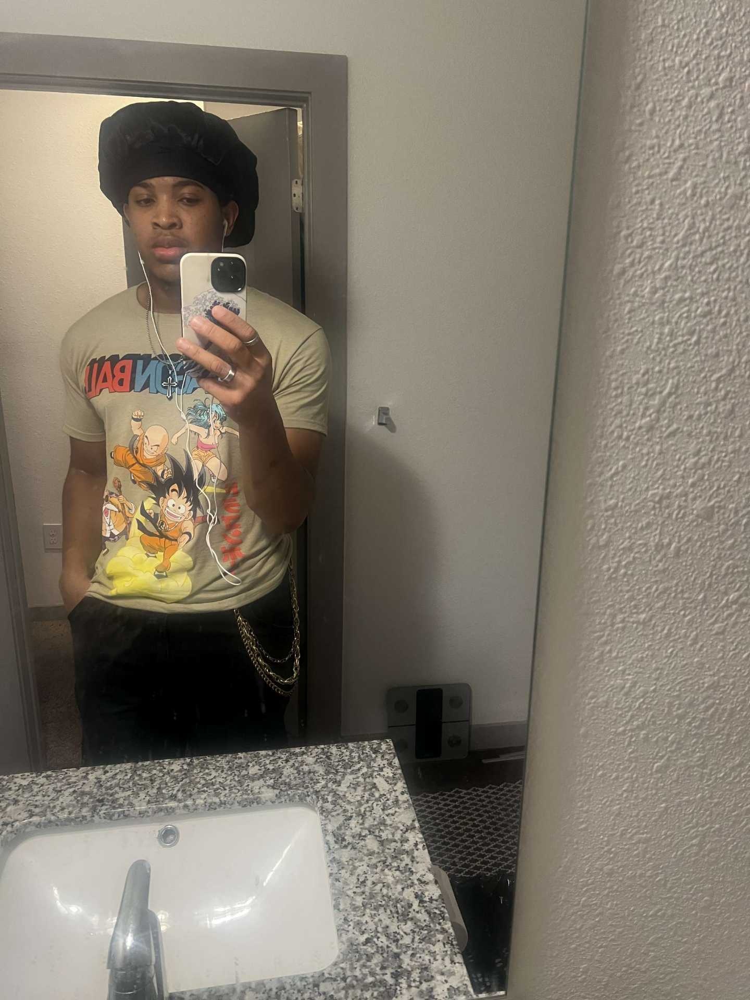

Introduction
Hanniel Holness | Honorable Hummingbird

Hi, my name is Hanniel Holness. I’m 21 years old, and a senior at UNCC, majoring in computer science. I’m a transfer student, having earned an Associate’s Degree before coming to Charlotte. I specialize in cybersecurity, so I’m aiming for an industry job that focuses on that after graduation.
- Personal Background: I moved to NC from the UK 4 years ago.
- Professional Background: I took an internship while at community college. I’m also working two jobs, including as an Instructional Assistant.
- Academic Background: I have an Associates in Science degree. I’m also an early entry student for the Masters in Cybersecurity program (i.e., taking graduate and undergraduate courses at the same time).
- Primary Computer Platform: A HP Envy Laptop
- Primary Work Location: Home, or the library.
- Primary Work Computer: HP ENVY 15.6” x360 2-in-1 Laptop, Microsoft Windows 11, Version 25H2
- Alternate Computer & Location:Using a computer from the library.
- Courses I'm taking & Why:
- ITSC 3155 - (Software Engineering): Required course.
- ITIS 3135 - (Front End Web App Development): Required course, needed for my cybersecurity major.
- ITIS 6214 - (Usable Securtiy And Privacy): Graduate course, needed for cybersecurity
- ITSC 3160 - (Database Design & Implem): Required course - teaches SQL.
“Just know that the earth is just a rock without the voices of art”- Kendrick Lamar (Pray, unreleased track)